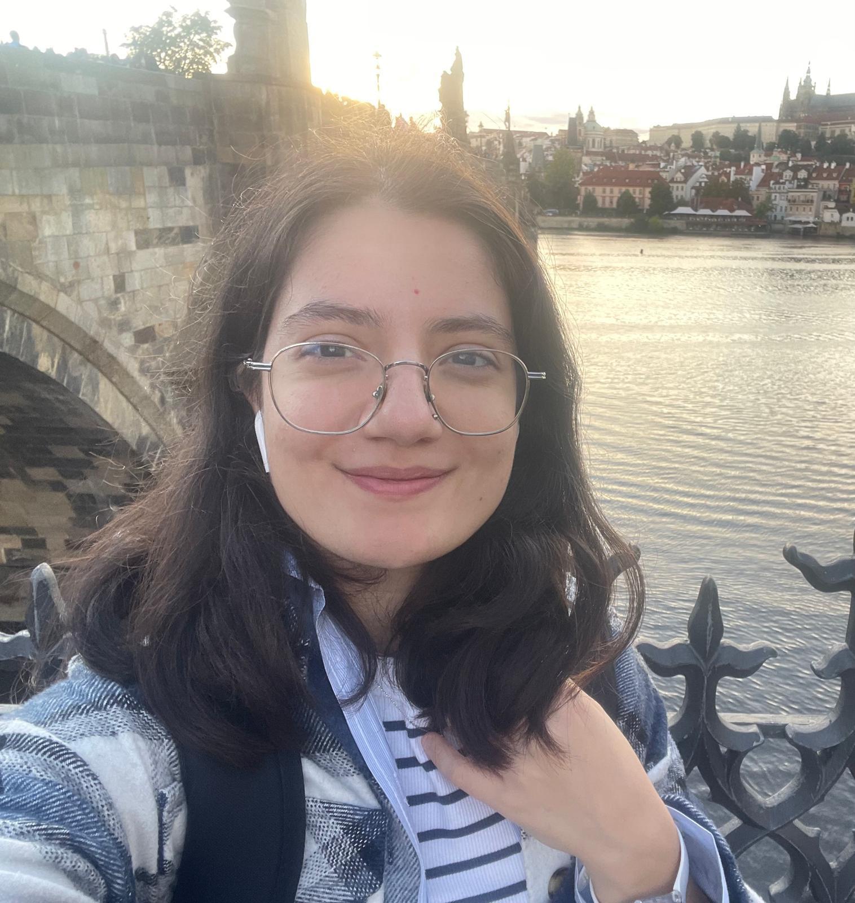

Middle East Technical University
Sep 2026 – PresentM.S. in Computer Engineering · Ankara, Türkiye
- Conducting research with Assoc. Prof. Emre Uğur at ROMER.
I am a master's student in Computer Engineering at Middle East Technical University, where I work with Assoc. Prof. Emre Uğur at ROMER. My research interests lie at the intersection of robot learning, reinforcement learning, and learned abstractions for planning.
I received my B.Sc. in Computer Engineering from Boğaziçi University, where I was a research assistant in the Cognitive Learning and Robotics (CoLoRs) Lab. I also studied at KTH Royal Institute of Technology as an exchange student and worked as a visiting researcher at the University of Innsbruck with Justus Piater.
I am interested in how robots can acquire useful skills and compact representations from interaction data, then use those representations for decision-making and planning.

My paper, Effect-Driven Skill Abstractions for Offline Reinforcement Learning, has been accepted as a poster at NeurIPS 2026. I will present it in Sydney, Australia.
See also Google Scholar and BibTeX.
NeurIPS 2026NeurIPS 2026 · Poster
paperconferenceOpenReviewproject page
@inproceedings{kilic2026effect,
abbr = {NeurIPS},
title = {Effect-Driven Skill Abstractions for Offline Reinforcement Learning},
author = {Kılıç, Burcu and Drexel, David and Uğur, Emre and Piater, Justus},
booktitle = {Fortieth Annual Conference on Neural Information Processing Systems (NeurIPS 2026)},
year = {2026},
html = {https://neurips.cc/virtual/2026/poster/148749},
pdf = {https://openreview.net/pdf?id=vLeZitFeKS},
website = {https://openreview.net/forum?id=vLeZitFeKS},
note = {Accepted as a poster; to be presented in Sydney, Australia},
selected = {true}
}RA-L 2026IEEE Robotics and Automation Letters · 2026
@article{dogangun2026bilevel,
abbr = {RA-L},
title = {Bilevel Planning with Learned Symbolic Abstractions from Interaction Data},
author = {Doğangün, Fatih and Kılıç, Burcu and Bahar, Serdar and Uğur, Emre},
journal = {IEEE Robotics and Automation Letters},
volume = {11},
number = {11},
pages = {12599--12606},
year = {2026},
month = {nov},
doi = {10.1109/LRA.2026.3732904},
html = {https://ieeexplore.ieee.org/document/11685328},
arxiv = {2603.08599},
code = {https://github.com/fatihdogangun/bilevel-planning},
selected = {true}
}arXiv 2026Preprint · 2026
@article{kilic2026joint,
abbr = {arXiv},
title = {Joint Discovery of Object and Action Symbols through Effect Prediction for Robotic Manipulation Planning},
author = {Kılıç, Burcu and Kartal, Berke and Doğangün, Fatih and Oztop, Erhan and Uğur, Emre},
journal = {arXiv preprint arXiv:2607.00031},
year = {2026},
arxiv = {2607.00031}
}arXiv 2026Preprint · 2026
@article{kartal2026trajectory,
abbr = {arXiv},
title = {Trajectory Learning with Graph Representations for Social Robot Navigation},
author = {Kartal, Berke and Kılıç, Burcu and Yıldırım, Yiğit and Uğur, Emre},
journal = {arXiv preprint arXiv:2607.00028},
year = {2026},
arxiv = {2607.00028}
}ICDL 2025IEEE International Conference on Development and Learning · 2025
@inproceedings{kilic2025predictability,
abbr = {ICDL},
title = {Predictability-Based Curiosity-Guided Action Symbol Discovery},
author = {Kılıç, Burcu and Ahmetoğlu, Alper and Uğur, Emre},
booktitle = {2025 IEEE International Conference on Development and Learning (ICDL)},
pages = {1--6},
year = {2025},
doi = {10.1109/ICDL63968.2025.11204386},
html = {https://ieeexplore.ieee.org/document/11204386},
arxiv = {2505.18248},
code = {https://github.com/burcukilic/predictability-based},
selected = {true}
}SIU 2025Signal Processing and Communications Applications Conference · 2025
@inproceedings{kilic2025learning,
abbr = {SIU},
title = {Learning Action Primitives in Manipulation Robots},
author = {Kılıç, Burcu and Ahmetoğlu, Alper and Uğur, Emre},
booktitle = {2025 33rd Signal Processing and Communications Applications Conference (SIU)},
year = {2025},
doi = {10.1109/SIU66497.2025.11111831},
html = {https://ieeexplore.ieee.org/document/11111831},
pdf = {https://emreugur.org/papers/Kilic-2025-SIU.pdf}
}M.S. in Computer Engineering · Ankara, Türkiye
B.Sc. in Computer Engineering · Istanbul, Türkiye
Exchange student in Computer Science and Engineering · Stockholm, Sweden
Graduate Research Assistant · Ankara, Türkiye
Data Scientist · Istanbul, Türkiye
Research Assistant · Istanbul, Türkiye
Computer Vision Intern · Istanbul, Türkiye
Visiting Researcher · Innsbruck, Austria
Machine Learning Intern · Munich, Germany
AI Developer · Istanbul, Türkiye